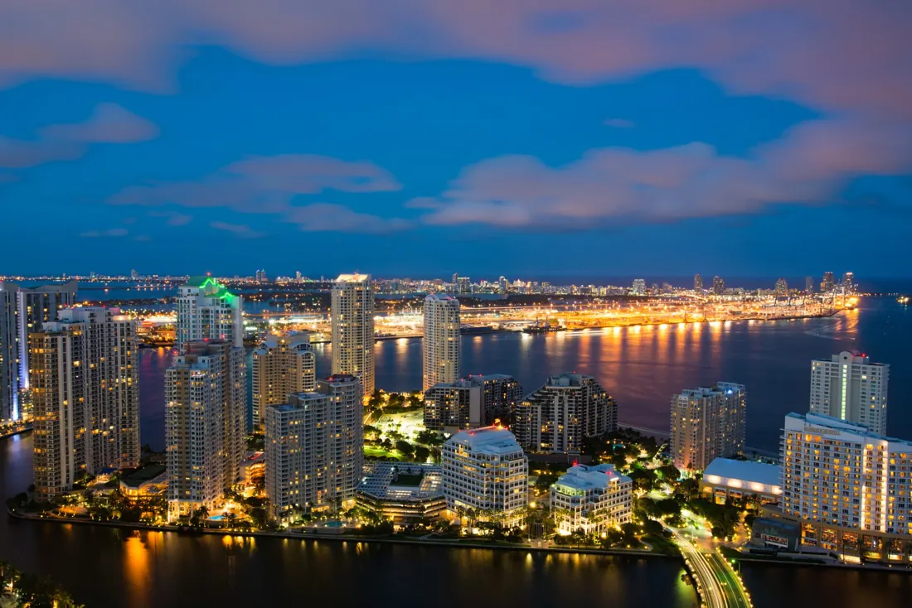
Miami
Art déco, praia e pântano no mesmo fim de semana.
Quero essa viagem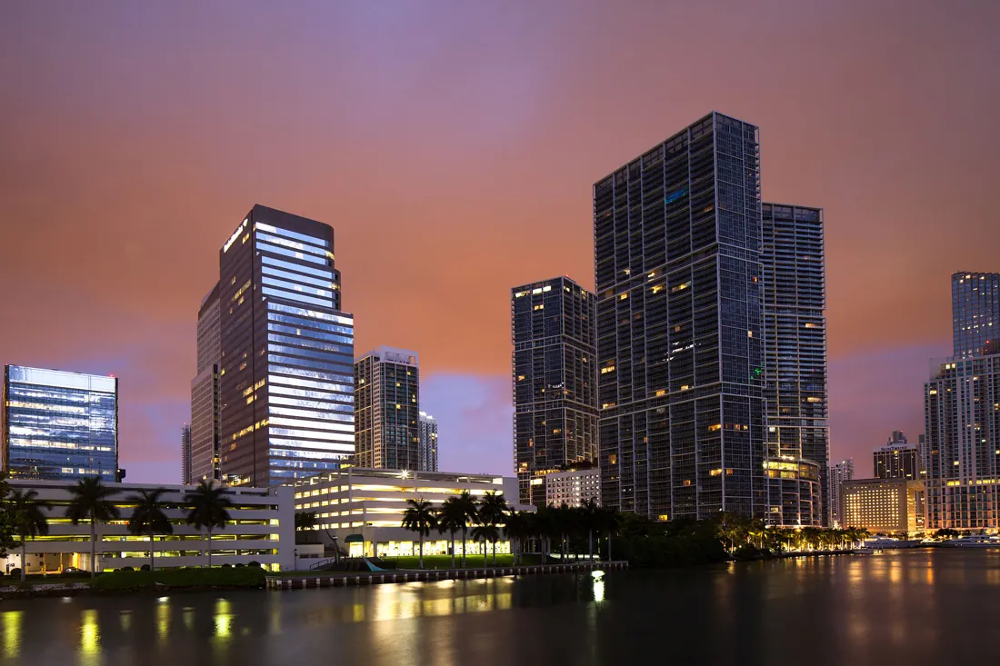
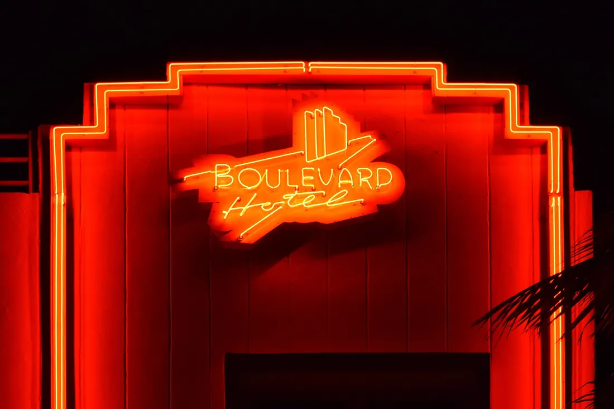
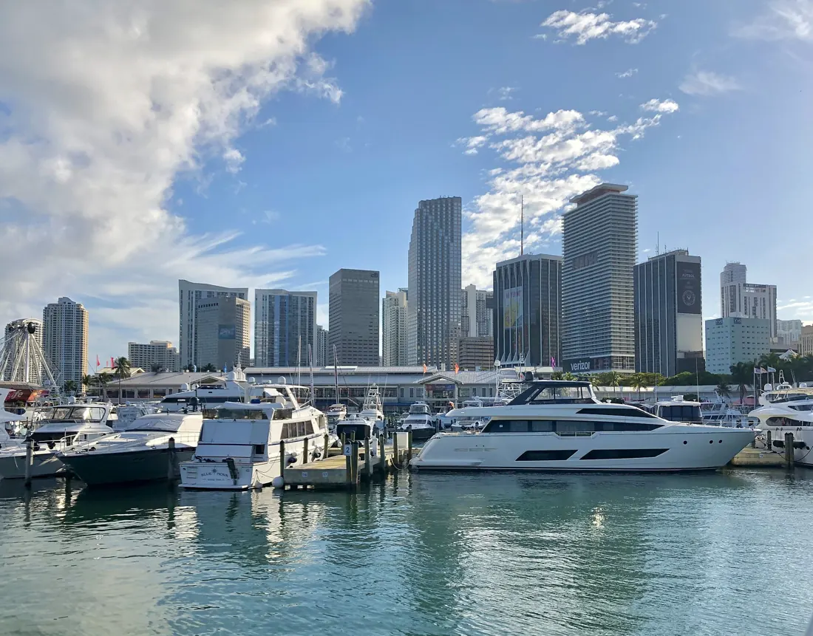
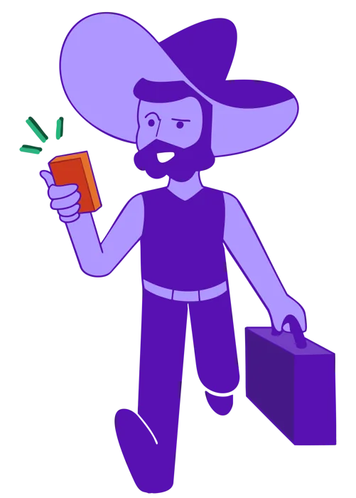
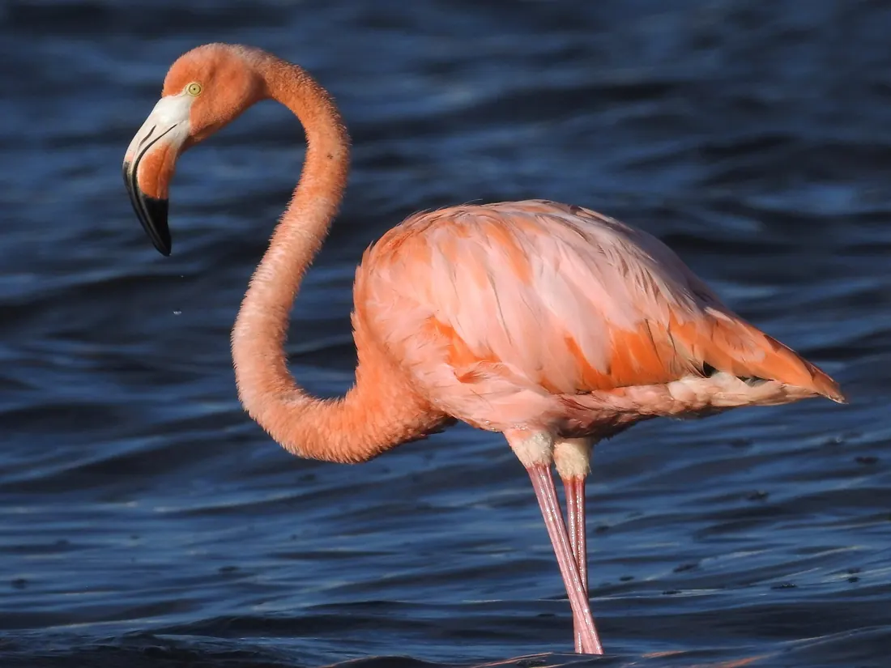
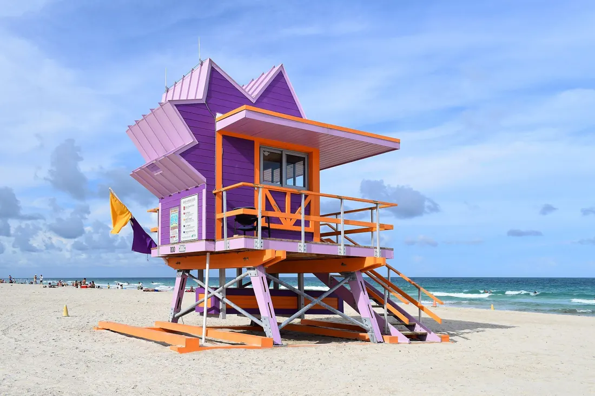
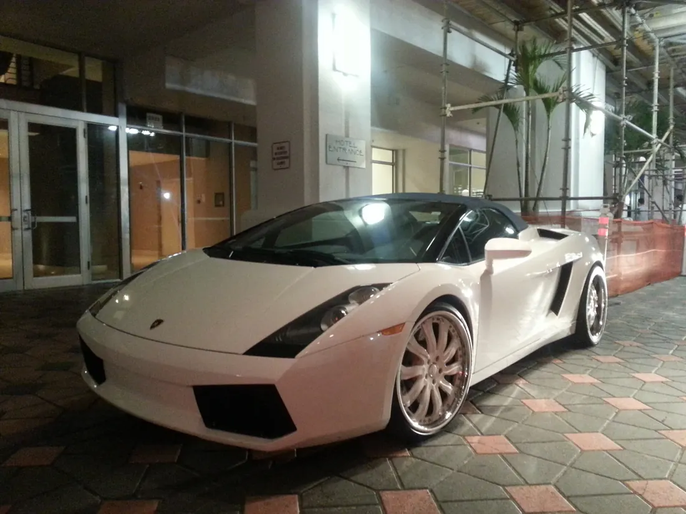
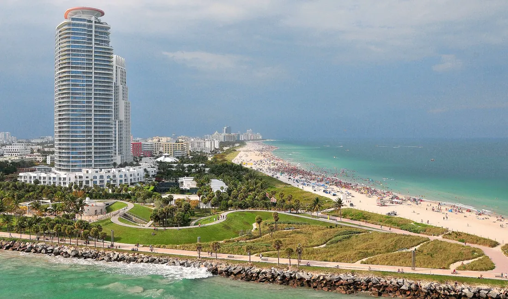
No app do OND você anda por lugares reais da cidade, ouve o guia de cada um e responde um desafio no fim. De graça, sem precisar comprar viagem.
Neon, lanchas, pântanos e arranha-céus existem de verdade. A gente cota a viagem com as suas datas e uma pessoa responde no WhatsApp.

Art déco, praia e pântano no mesmo fim de semana.
Quero essa viagem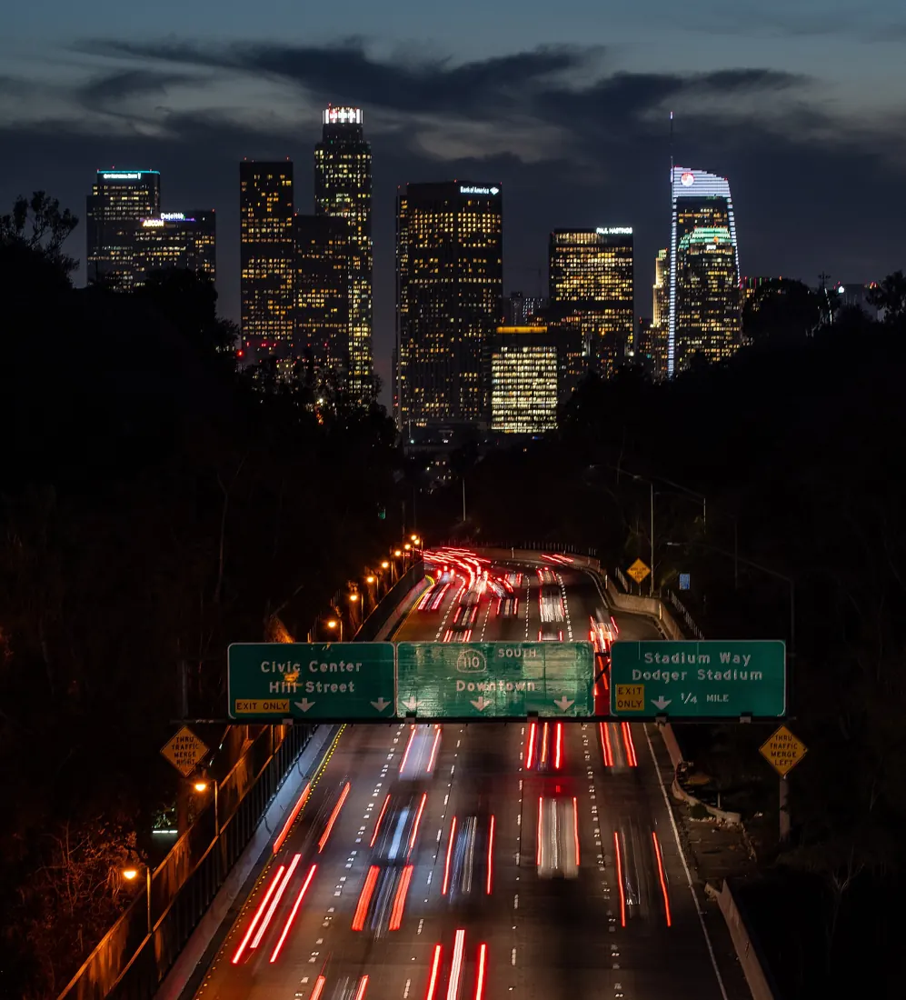
Vias expressas, colinas e o pôr do sol do Pacífico.
Quero essa viagem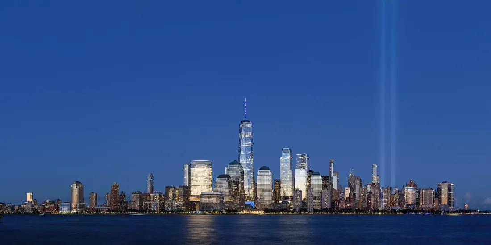
A cidade que nunca dorme, de ponta a ponta.
Quero essa viagemPontes, pubs e séculos de história em cada esquina.
Quero essa viagemO OND não é afiliado a nenhum jogo, editora ou marca. As fotos são de lugares reais, do Wikimedia Commons: Jimmy Baikovicius (CC BY-SA 2.0), Radomianin (domínio público e CC BY-SA 4.0), Chris6d (CC BY-SA 4.0), VeyronBuga (CC BY-SA 3.0), Trish Hartmann (CC BY 2.0), JeffreyGammon (CC BY 4.0), M McBey (CC BY 2.0), Gabriel Kaplan (CC BY 3.0), Camiloarenivar (CC BY-SA 4.0), King of Hearts (CC BY-SA 4.0) e Diliff (CC BY-SA 3.0).